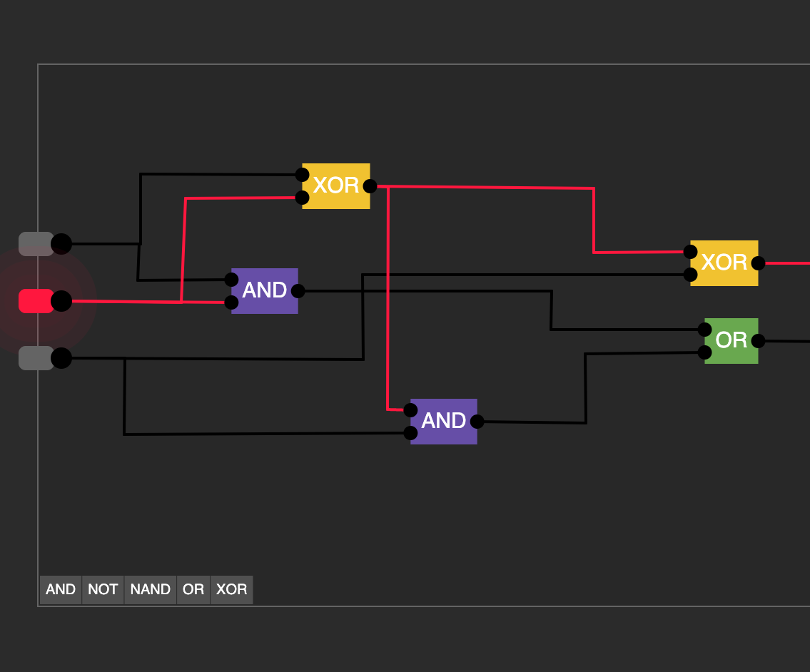
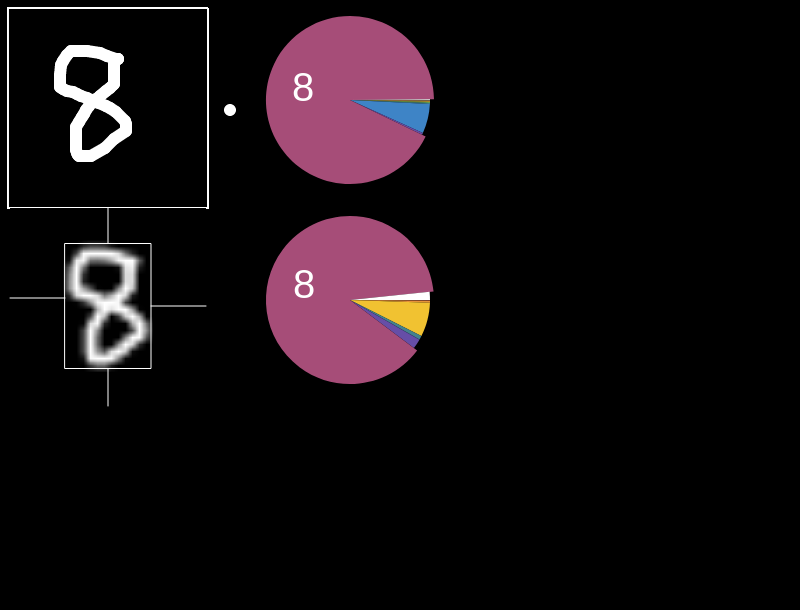
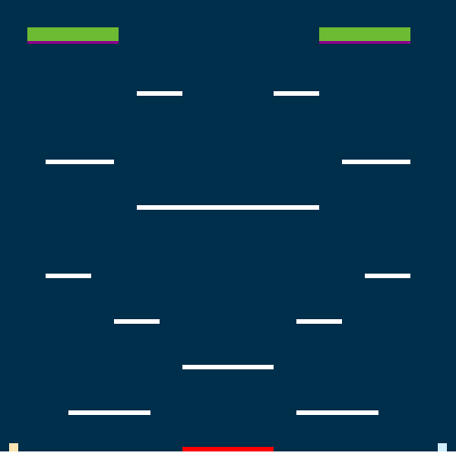
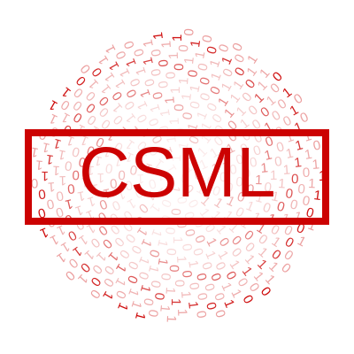
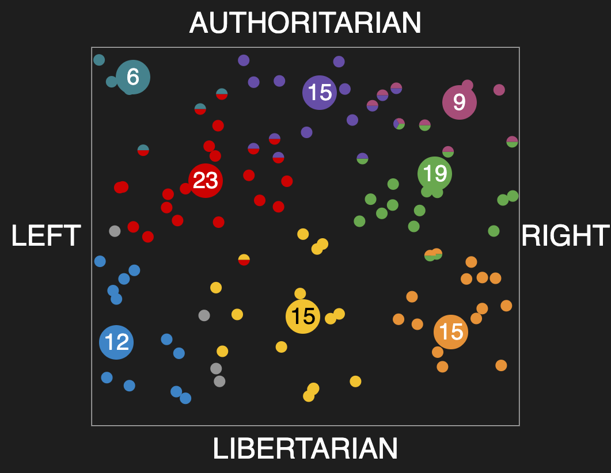
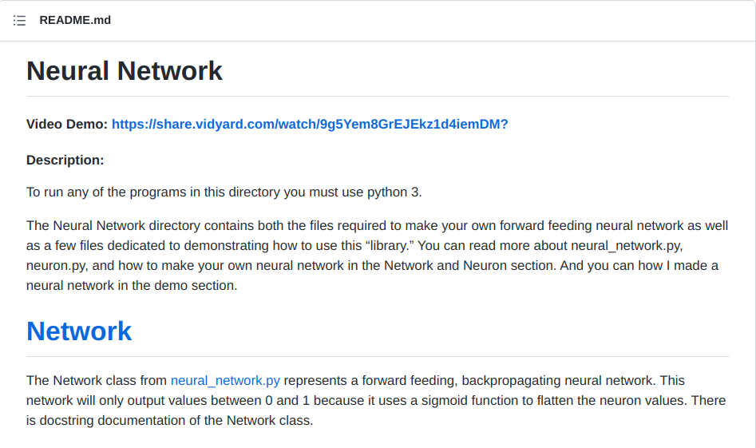

|

NAND Grinder Linus Tornqvist |

Digit Classifier Linus Tornqvist |

Smash V1 Jasper Kunz |

Fibonacci Disc Linus Tornqvist |

Racing Game WIP Jasper Kunz |

Gravity Simulation Linus Tornqvist |

Voting Simulation Linus Tornqvist |

Neual Network (underwhelming) Foster Angus |